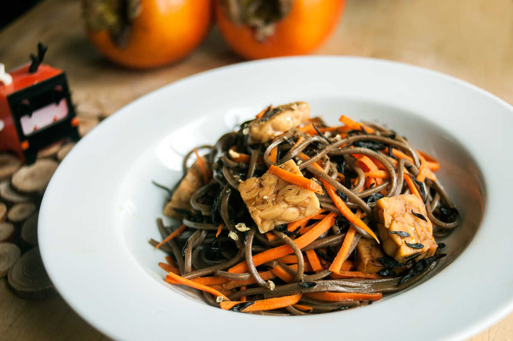

arame soba
2 portions — 40 minutes
Recipe location: Montreal, QC. Canada
We cook a lot of Japanese-style food, not just because we lived there for a few years, but because we appreciate the subtle flavors and aesthetics of Japanese cuisine.
Soba: In this recipe I used pre-packaged buckwheat noodles (そば soba), but it is possible to prepare from scratch using a 1:0.5 mixture of buckwheat and whole wheat flour. Making juwari soba 十割そば (100% buckwheat noodles) is very difficult to master, and is best left for the patient, which I am not, and the experienced, which I also, am not.
Arame: Arame is a species of kelp of a dark brown color, it has a mild, semi-sweet flavor and a firm texture. It can be reconstituted in about 5 minutes, and can be added to many kinds of dishes. It is high in calcium, iodine, iron, magnesium and vitamin A. This recipe used to include hijiki, but I've since removed it because it contains potentially toxic quantities of inorganic arsenic. Arame seaweed doesn't share this toxicity, and is a good substitute in both texture and taste.
 arame handful
arame handful soy sauce 30 ml
soy sauce 30 ml sake 30 ml
sake 30 ml mirin 30 ml
mirin 30 ml whole cane sugar 5 g
whole cane sugar 5 g buckwheat noodles 2 portions
buckwheat noodles 2 portions sesame oil 2.5 ml
sesame oil 2.5 ml carrots 1
carrots 1 garlic 2 cloves
garlic 2 cloves tempeh 60 g
tempeh 60 g sichuan peppercorns To taste
sichuan peppercorns To taste
main
- Put handful of dried arame in a bowl and cover with a cup of water. Let re-hydrate for at least 5 minutes, drain.
- In a small bowl, mix the sauce ingredients together: 30 ml (2 tbsp) of soy sauce, 30 ml of sake, 30 ml (2 tbsp) of mirin and 5 g (1 tsp) of whole cane sugar. Keep aside.
- Bring a pot of water to a boil, add 2 portions of soba (buckwheat noodles) and give them a quick stir so they go underwater. Reduce heat to medium and cook for 4-5 minutes. Drain, rinse and transfer to a pot of cold water. Wash the noodles using your hands to remove the excess starch, drain and place in a bowl. Then, toss noodles with 2.5 ml (1/2 tsp) of sesame oil.
- Julienne 1 carrot, chop 2 cloves of garlic and cut 60g of tempeh into small cubes.
- Heat a pan with a drizzle of sesame oil at medium heat and sautee the 2 minced garlic cloves for a minute until fragrant. Add the tempeh as well as the julienned carrot and cook for 2-3 minutes.
- Pour the sauce and cook for an additional 5 minutes until the tempeh and carrots are cooked, then turn off heat and add cooked soba noodles and the arame. Stir until noodles are well-coated.
- Season with some sichuan pepper.